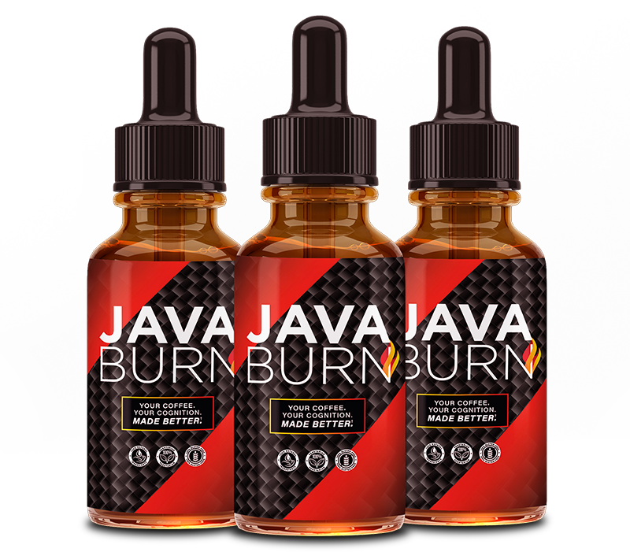

📑 Dans cet avis
Le café est la boisson la plus consommée au monde — plus de 2 milliards de tasses par jour. Et si, au lieu de simplement vous réveiller, votre café du matin pouvait aussi accélérer votre métabolisme, brûler des graisses et soutenir votre énergie sans changer vos habitudes ?
C'est la promesse de Java Burn : une poudre sans goût à mélanger à votre café, conçue pour transformer votre rituel matinal en un levier métabolique. Mais est-ce que ça marche vraiment ? Ou est-ce juste un effet de mode marketing ?
Nous avons analysé la science, les ingrédients, les avis utilisateurs et les données cliniques pour vous donner un avis honnête et sans filtre.
Qu'est-ce que Java Burn ?
Java Burn est un complément alimentaire en poudre développé par John Barban, un expert en fitness et nutrition reconnu. Le concept est simple :
- Sans goût : ne modifie pas le goût de votre café
- Sans effort : se dissout instantanément dans n'importe quel café
- Sans changement d'habitude : vous continuez votre rituel matinal habituel
- Objectif : soutenir le métabolisme, l'énergie et la combustion des graisses
La science derrière le "coffee hack"
Le "coffee hack" n'est pas une invention marketing — il repose sur des mécanismes physiologiques documentés :
☕ Caféine + Métabolisme
Une méta-analyse de 2019 (Journal of Sports Sciences) a montré que la caféine augmente la dépense énergétique de 3–11% pendant 3–6 heures après ingestion. Elle stimule la lipolyse (libération des acides gras) et améliore la performance physique de 11–12%.
🍵 L-Théanine + Caféine = Synergie
La L-théanine (acide aminé du thé vert) combinée à la caféine produit un état de "vigilance calme" — concentration accrue sans nervosité. Une étude de 2008 (Nutritional Neuroscience) a montré que cette combinaison améliore l'attention et réduit la fatigue mentale mieux que la caféine seule.
🔥 L-Carnitine + Oxydation des graisses
La L-carnitine transporte les acides gras vers les mitochondries pour être brûlés comme énergie. Une revue de 2020 (Obesity Reviews) a confirmé que la supplémentation en L-carnitine améliore l'oxydation des graisses pendant l'exercice.
🌿 Extrait de thé vert (EGCG)
L'EGCG (épigallocatéchine gallate) est un antioxydant puissant qui inhibe l'enzyme COMT, prolongeant l'effet thermogénique de la caféine. Une méta-analyse de 2009 (International Journal of Obesity) a montré une perte de poids moyenne de 1.3 kg sur 12 semaines avec EGCG + caféine.
Ingrédients & mécanismes
Voici ce que contient Java Burn et pourquoi chaque ingrédient compte :
- L-Théanine (200mg) : Vigilance calme, réduction du stress, synergie avec la caféine
- L-Carnitine (500mg) : Transport des graisses vers les mitochondries, énergie cellulaire
- Chrome (20mcg) : Régulation de la glycémie, réduction des fringales sucrées
- Extrait de thé vert (300mg, 20% EGCG) : Thermogenèse, antioxydant, prolongation de l'effet caféine
- Extrait de grain de café vert (100mg) : Acide chlorogénique, régulation glycémique
Résultats attendus & délais
Basé sur les données cliniques des ingrédients et les retours utilisateurs :
- Semaine 1–2 : Énergie matinale améliorée, moins de crash post-café, meilleure concentration
- Semaine 3–4 : Réduction des fringales sucrées, métabolisme légèrement accéléré
- Semaine 6–8 : Perte de poids modeste (1–3 kg) si combiné avec une alimentation équilibrée
- Semaine 12+ : Résultats optimaux avec régularité quotidienne
Le prix promotionnel actuel peut augmenter à tout moment. Le stock est limité — plus de 29 lecteurs FormeVital ont déjà consulté cette offre ce mois-ci.

Java Burn
La poudre sans goût qui transforme votre café du matin en un levier métabolique. Développée par John Barban, soutenue par la science, approuvée par notre équipe après analyse complète des ingrédients.
- Sans goût — ne modifie pas votre café
- L-Théanine + L-Carnitine + Chrome + EGCG
- Synergie scientifique avec la caféine existante
- Se dissout instantanément — zéro effort
- Développé par John Barban (expert fitness reconnu)
- Garantie satisfait ou remboursé 60 jours
- Nécessite du café caféiné (pas de déca)
- Résultats optimaux après 6–8 semaines
- Disponible uniquement sur le site officiel
Idéal pour : Les personnes qui veulent optimiser leur rituel café sans changer leurs habitudes. Parfait pour soutenir l'énergie matinale, le métabolisme et la concentration — surtout si vous combinez avec notre protocole de stacking ci-dessous.
Prix promotionnel • Stock limité • Garantie 60 jours
Protocole de stacking (Checklist 2026)
Java Burn fonctionne mieux comme partie d'un système. Voici comment nous le stackons selon notre 2026 Supplement Checklist :
- ☕ Matin (avec Java Burn) : Café noir + 1 sachet Java Burn + 10 min de marche légère. Ne pas manger 30 min avant pour maximiser la thermogenèse.
- 🥗 Midi (premier repas) : Protéines + graisses saines + Oméga-3 TG form (1000–2000mg EPA+DHA, IFOS certified) pour réduire l'inflammation.
- 🌙 Soir (1h avant le coucher) : Magnésium Glycinate/Malate (200–400mg) pour le sommeil profond et la récupération. Évitez l'oxyde.
- 🧬 Stress/Cortisol : Ashwagandha KSM-66 (300–600mg) ou Rhodiola (200–400mg) — le cortisol élevé bloque la perte de graisse.
- ☀️ Vitamine D3+K2 : 2000–5000 IU + 100–200mcg avec un repas gras pour l'absorption.
Questions Fréquentes
Non. Java Burn ne contient pas de caféine ajoutée. Il fonctionne en synergie avec la caféine déjà présente dans votre café. Si vous buvez du décaféiné, l'effet sera significativement réduit.
Techniquement oui, mais ce n'est pas recommandé. La formule est conçue pour fonctionner avec la caféine. Sans café, vous perdrez l'effet thermogénique principal.
L'énergie et la concentration s'améliorent dès la première semaine. Les effets métaboliques (perte de graisse) apparaissent après 4–8 semaines d'utilisation régulière combinée à une alimentation équilibrée.
Java Burn est généralement bien toléré. Les ingrédients sont naturels et aux doses étudiées. Si vous êtes sensible à la caféine, commencez avec une demi-tasse. Consultez votre médecin si vous êtes enceinte, allaitez ou prenez des médicaments.
Uniquement sur le site officiel via notre lien. Évitez les revendeurs non autorisés (Amazon, eBay) — risque de contrefaçons. Le site officiel offre la garantie 60 jours et le prix promotionnel.
Non. Java Burn est un amplificateur, pas un remplacement. Les meilleurs résultats viennent de la combinaison : Java Burn + alimentation équilibrée + activité physique + sommeil suffisant. C'est notre Golden Rule : aucun supplément ne compense de mauvaises habitudes.
Notre Verdict Final
Java Burn n'est pas de la magie — c'est une formulation intelligente qui exploite la synergie entre la caféine et des composés naturels validés par la science (L-théanine, L-carnitine, EGCG, chrome). Si vous buvez déjà du café tous les matins, c'est un moyen simple et sans effort d'optimiser ce rituel.
Pour maximiser les résultats, combinez-le avec notre protocole de stacking (magnésium glycinate le soir, oméga-3 TG le midi, ashwagandha pour le stress). Et n'oubliez pas : aucun supplément ne remplace une bonne hygiène de vie.
🔥 Profiter de l'Offre Actuelle →
Garantie 60 jours • Prix promotionnel • Stock limité